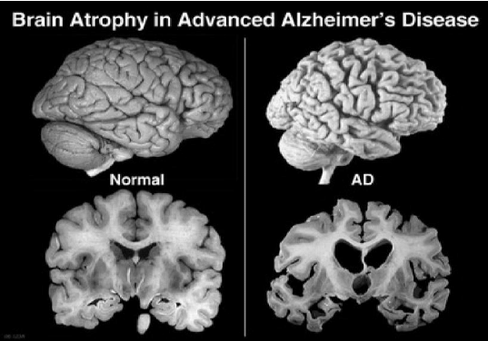

Alzheimer’s Disease

SYMPTOMS:
Symptoms of Alzheimer’s disease vary from person to person and worsen over time. Symptoms of the disease include:
- Memory loss. This is usually one of the first symptoms of Alzheimer’s disease.
-
Putting objects in odd places
-
Confusion about events, time and place
-
Repeating questions
-
Trouble managing money and paying bills
-
Trouble performing/taking longer to perform familiar tasks
-
Getting lost/wandering
-
Not being able to sleep
-
Changes in personality and behavior including agitation, anxiety and aggression
Having groundless suspicions about family, friends and caregivers
-
Poor judgment or reasoning
-
Trouble recognizing family and friends
-
Difficulty learning and remembering new information/recent events
-
Difficulty performing multistep tasks, such as dressing or cooking
-
Having hallucinations, delusions or paranoia
-
Difficulty speaking/finding the right words
-
Difficulty reading, writing and working with numbers
-
Difficulty walking
-
Difficulty swallowing
CAUSES
Alzheimer’s disease is caused by the abnormal build-up of proteins in the brain. The build-up of these proteins — called amyloid protein and tau protein — leads to cell death.
The human brain contains over 100 billion nerve cells as well as other cells. The nerve cells work together to fulfill all the communications needed to perform such functions as thinking, learning, remembering, and planning. Scientists believe that amyloid protein builds up in the brain cells, forming larger masses called plaques. Twisted fibers of another protein called tau form into tangles. These plaques and tangles block the communication between nerve cells, which prevents them from carrying out their processes. The slow and ongoing death of the nerve cells, starting in one area of the brain (usually in the area of the brain that controls memory) then spreading to other areas, results in the symptoms seen in patients with Alzheimer’s disease.
DIAGNOSIS
These tests are used to diagnose Alzheimer’s disease or to rule out other medical conditions that cause symptoms similar to Alzheimer’s disease:
- Medical history. The physician will ask about current and past medical conditions, medications the patient is taking, and family history of Alzheimer’s disease or other memory disorders. He or she will also check all current vital signs (blood pressure, heart rate, temperature, pulse rate) and conduct a neurologic exam (check reflexes and coordination, eye movement, speech and sensation).
-
Blood and urine tests. These are standard lab tests conducted to rule out other causes of symptoms including blood counts, vitamin levels, liver and kidney function, mineral balance, and thyroid gland function tests.
Mental status testing. These tests include tests of memory, problem solving, focus, counting, and language skills. This type of testing can also monitor the progress of Alzheimer’s disease.
-
Neuropsychological testing. This exam includes tests to assess attention, memory, language, the ability to plan and reason, the ability to change behavior, as well as personality and emotional stability. This type of testing can also monitor the progress of Alzheimer’s disease.
-
Spinal tap. Also called a lumbar puncture, this test checks for the tau and amyloid proteins that form the plaques and tangles seen in the brains of people with Alzheimer’s disease.
-
Brain imaging tests
TREATMENT
There is no cure for Alzheimer’s disease, but available medications temporarily slow the worsening of dementia symptoms and help with behavioral problems that may appear during the course of the disease.
Four medications representing two drug classes are currently approved by the Food and Drug Administration (FDA) to treat the symptoms of Alzheimer’s disease. These drugs are the cholinesterase inhibitors and a NMDA antagonist.